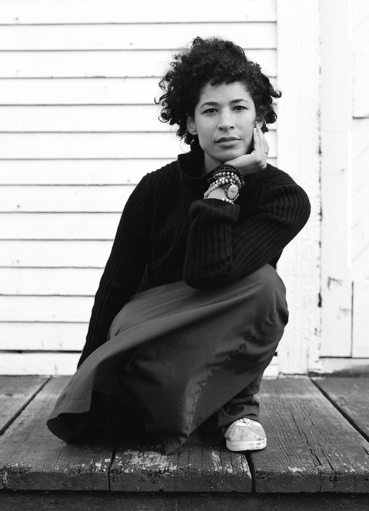

Third-wave feminism is an iteration of the feminist movement that began in the early 1990s United States [2] and continued until the fourth wave began around 2012.[3][4] Born in the 1960s and 1970s as members of Generation X, and grounded in the civil-rights advances of the second wave, third-wave feminists embraced individualism and diversity and sought to redefine what it meant to be a feminist.[5][6][7] According to feminist scholar Elizabeth Evans, "[t]he confusion surrounding what constitutes third-wave feminism is in some respects its defining feature."[8] The third wave is traced to the emergence of the Riot grrrl feminist punk subculture in Olympia, Washington, in the early 1990s,[a] and to Anita Hill's televised testimony in 1991—to an all-male, all-white Senate Judiciary Committee—that Clarence Thomas, nominated for the Supreme Court of the United States, had sexually harassed her. The term third wave is credited to Rebecca Walker, who responded to Thomas's appointment to the Supreme Court with an article in Ms. magazine, "Becoming the Third Wave" (1992).[1][7] She wrote:  So I write this as a plea to all women, especially women of my generation: Let Thomas’ confirmation serve to remind you, as it did me, that the fight is far from over. Let this dismissal of a woman's experience move you to anger. Turn that outrage into political power. Do not vote for them unless they work for us. Do not have sex with them, do not break bread with them, do not nurture them if they don't prioritize our freedom to control our bodies and our lives. I am not a post-feminism feminist. I am the Third Wave.[1] Walker sought to establish that third-wave feminism was not just a reaction, but a movement in itself, because the feminist cause had more work ahead. The term intersectionality—to describe the idea that women experience "layers of oppression" caused, for example, by gender, race and class—had been introduced by Kimberlé Williams Crenshaw in 1989, and it was during the third wave that the concept flourished.[10] As feminists came online in the late 1990s and early 2000s and reached a global audience with blogs and e-zines, they broadened their goals, focusing on abolishing gender-role stereotypes and expanding feminism to include women with diverse racial and cultural identities.[11][12] The third wave saw the emergence of new feminist currents and theories, such as intersectionality, womanism (within black feminism), sex positivity, vegetarian ecofeminism, transfeminism, and postmodern feminism.